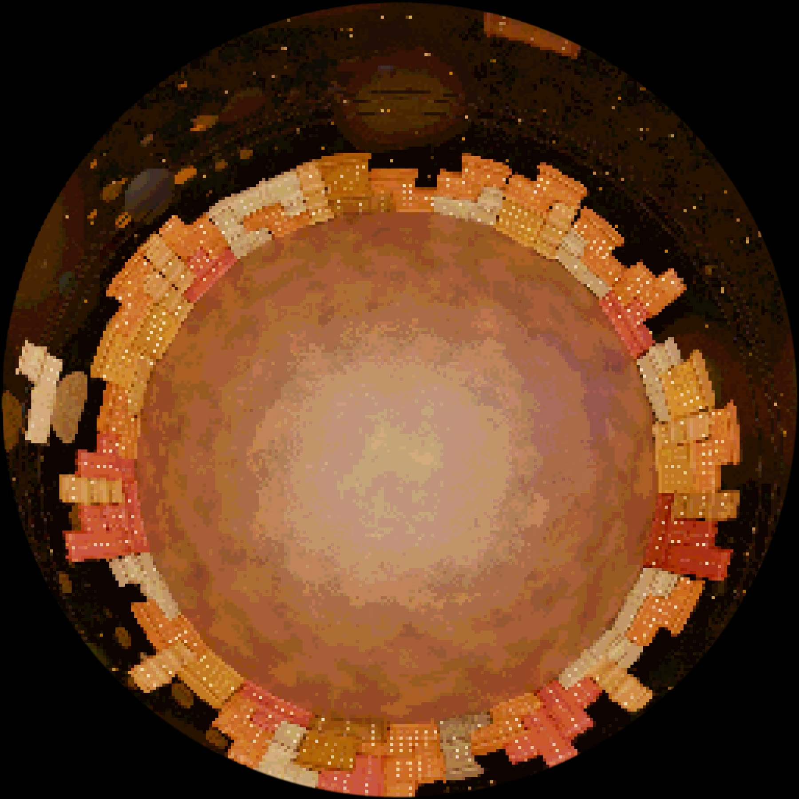
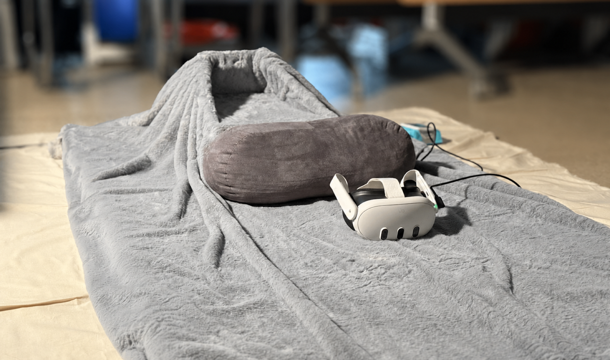
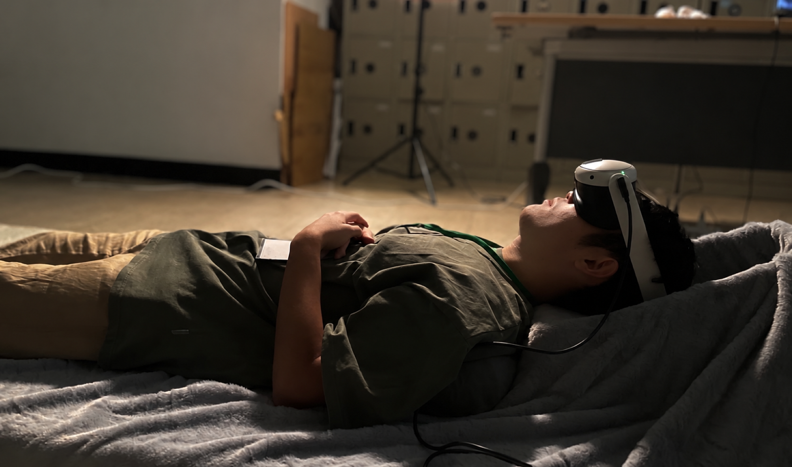
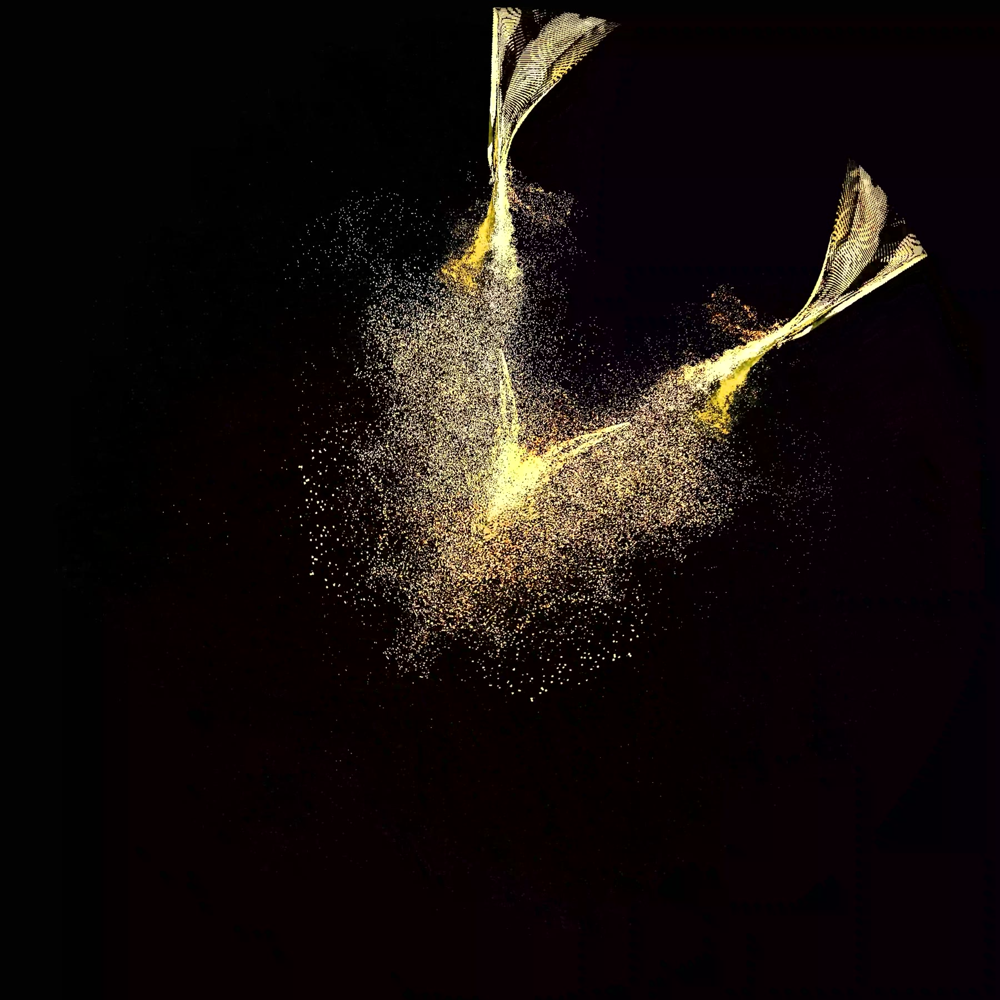
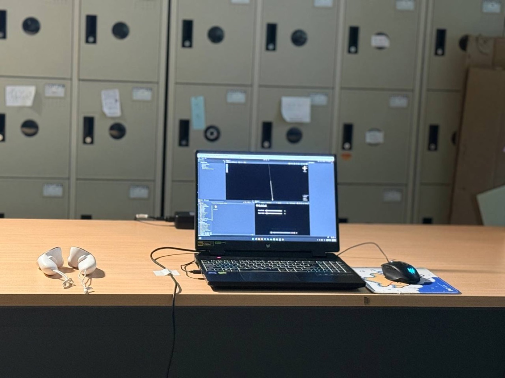

02 — 2025 — Tactile sound / VR installation
Paper Shell Echo紙殼迴聲
以紙殼振動取代喇叭發聲，搭配頭戴式顯示器中的穹頂影像。A cardboard shell replaces the loudspeaker as the sounding body, paired with fulldome imagery in a VR headset.
穹頂展演以聲音包覆觀眾的身體，但聲音從喇叭、穹幕到座位的傳遞路徑通常不被察覺。《紙殼迴聲》將穹頂縮小為紙板殼體，觀眾躺臥後將頭部置於殼內。
Fulldome performances surround the audience with sound, yet the path the sound travels, from speaker to dome surface to seat, usually goes unnoticed. Paper Shell Echo reduces the dome to a cardboard shell; the visitor lies down with their head inside it.
裝置中沒有喇叭。殼體內嵌線性共振致動器，將音訊轉為振動，由紙板本身發聲。聲音一部分經空氣傳入耳朵，一部分經與紙面接觸的後腦傳導。
The installation contains no loudspeaker. Linear resonant actuators embedded in the shell convert audio into vibration, so the cardboard itself becomes the sounding surface. Sound reaches the listener partly through the air and partly through the back of the head in contact with the shell.
VR 頭戴式顯示器播放 360 度影像，內容為作者為 2024 年未來視覺實驗室成果呈現製作的兩段穹頂影像，於專為本作撰寫的虛擬穹頂模擬器中播放。
The headset plays 360° content: two fulldome pieces produced for the 2024 Future Vision Lab showcase, played back in a virtual dome simulator written for this work.
- Medium
- Cardboard enclosure, Taptic Engine linear actuators, Bluetooth audio, VR headset, 360° video
- Format
- Single-visitor, lying down, ~4 min
- Role
- Concept, structure, electronics, 360° content
- Shown
- CGW 2025 (Computer Graphics Workshop), Taipei — Honorable Mention
- Concept
- Sound conduction as a material interface
- Build
- Cardboard structure, Taptic Engine LRA array, Bluetooth audio receiver
- Content
- Two FVL 2024 fulldome pieces, played in a custom virtual dome simulator
- Recognition
- CGW 2025 Honorable Mention (artwork track)


